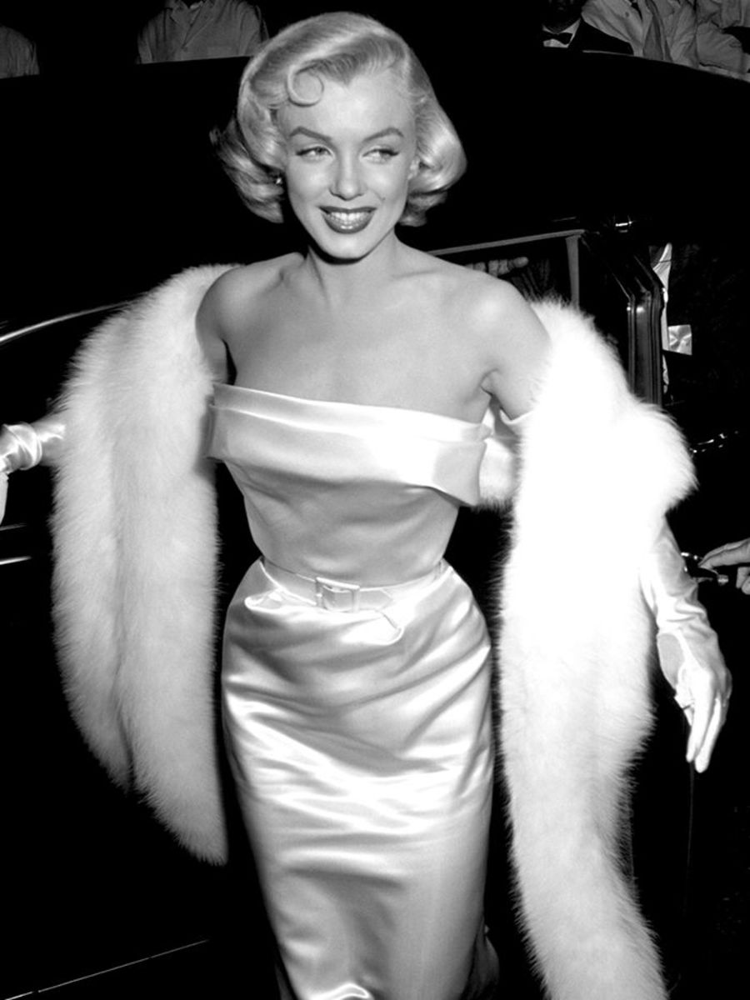
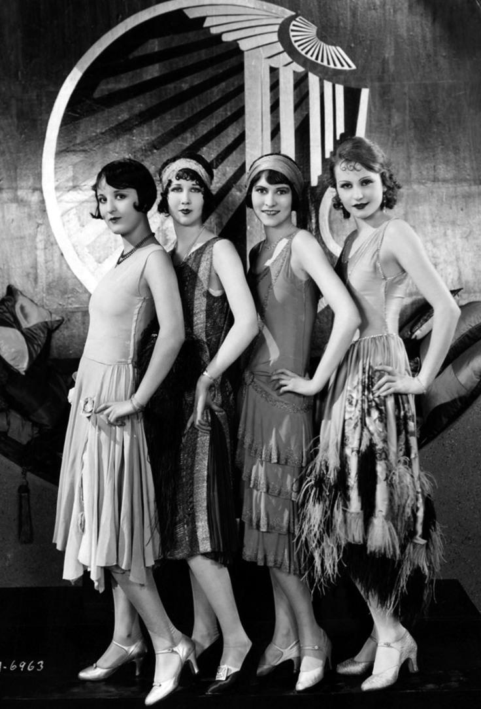

Edwardian Era Elegance

The Edwardian Era was characterized by elegance, ornate dresses, and high-society fashion trends.
Hollywood Glamour
Hollywood's golden age brought glamorous gowns, satin fabrics, and dazzling accessories to the spotlight.
Poiret and the Birth of Modernism

Designer Paul Poiret revolutionized fashion with free-flowing silhouettes and bold colors.
Rise of Punk and Street Fashion

Punk fashion emerged as a rebellious statement, introducing leather jackets, ripped jeans, and bold accessories.
The Flapper Revolution
Flapper style in the 1920s broke norms with shorter skirts, bobbed hair, and carefree spirit.
Utility and Wartime Fashion

World War II brought practical clothing designs with functional fabrics and muted tones.